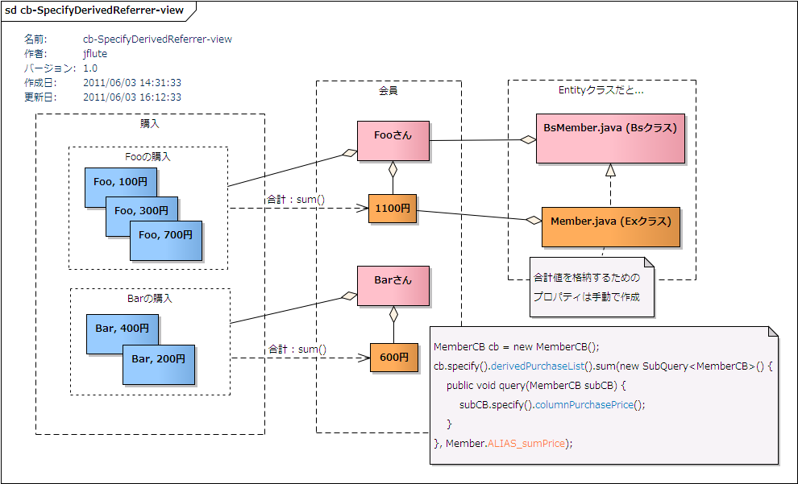

(Specify)DerivedReferrer
${indexlist}概要
基本概念
子テーブルの導出カラム(最大値や合計値)を、基点テーブルの(疑似)カラムとして取得します。
例えば、"会員一覧と共に、それぞれの会員の最終ログイン日時や購入金額合計も一緒に取得" というように、 子テーブルのカラムの値を元に導出したカラムを、基点テーブルと共に取得することができます。 select 句の相関サブクエリを使って基点テーブルと同じ粒度のレベルのデータとして取得し、 その導出カラムの値は、基点テーブルの ExEntity で手動で追加されたプロパティに格納されます。
会話上では、すぺしふぁいでぃらいゔどりふぁらぁ と表現します。単に でぃらいゔどりふぁらぁ と言った場合、厳密には (Query)DerivedReferrer を含みますが、前後関係で分かる場合は、この (Specify)DerivedReferrer のことを示すことが多くあります。 (ドキュメント上でも前後関係で明らかな場合に、単に DerivedReferrer と表記して (Specify)DerivedReferrer を指すこともあります)
(Specify)DerivedReferrer概念図
図 : (Specify)DerivedReferrer概念図 
{kind=link}
子テーブル対応の役割を明確に
これは、あくまで子テーブルの導出カラム(とあるカラムの max や sum など、実質的にone-to-oneとなるデータ)の取得であって、 子テーブルを many として(many のまま)、データを取得(LoadReferrer)するものではありません。
実装方法
まずはプロパティの作成
まずは、導出カラムを受け取るためのプロパティを ExEntity (EntityのExクラス) に定義します。
e.g. (Specify)DerivedReferrerのためのプロパティ定義 {MEMBER, MEMBER_LOGIN} @Java
public class Member extends BsMember {
...
public static final String ALIAS_latestLoginDatetime = "LATEST_LOGIN_DATETIME";
protected Date latestLoginDatetime;
public Date getLatestLoginDatetime() {
return latestLoginDatetime;
}
public void setLatestLoginDatetime(Date latestLoginDatetime) {
this.latestLoginDatetime = latestLoginDatetime;
}
...
}
こちらのプロパティ、EMechaで自動生成することができます。
先に、ConditionBean側の実装をして("実装の流れ" を参考に)、第二引数の aliasName のところで、Member.ALIAS_latestLoginDatetime という風に、まだ存在しない定数を先に打ち込みます。
図 : Entityでの区分値メソッドの補完

当然、コンパイルエラーになりますが、そこで ctrl + 1 を押して、想定するデータ型の "DerivedProperties" を選択すると、Exクラスにプロパティが自動生成されます。
もし、EMechaが利用できない場合は、手動でプロパティを作成します。
インスタンス変数、Getter・Setter、そしてエリアス名の定数を定義します。エリアス名の定数の値は、"LATEST_LOGIN_DATETIME" という感じで、DB上の命名ポリシーに変換したものが推奨されます(実際には、大文字小文字アンダースコア区別せず動作しますが習慣として)。 また、定数の名前は任意ですが、習慣的に "ALIAS_latestLoginDatetime" にすると良いでしょう。
実装の流れ ※1.1.x (Java8版)
specify() の後、derived[referrer-table]() を呼び出し、その後、max() や sum() など関数メソッドを選び、SubQuery のコールバック実装を引数に指定します。第二引数は、導出カラムを受け取るためのプロパティに対応するエリアス名、 オーバーロードの第三引数は、様々なオプション(coalesce 関数の利用など)を指定する DerivedReferrerOption を指定します。コールバックの中では、SpecifyColumn を使って導出カラムを(一つ)指定します。
e.g. (Specify)DerivedReferrerの実装手順 (Eclipseでコード補完) {MEMBER, MEMBER_LOGIN} @Java
// cb: MemberCB
cb.sp // .sp と打って enter
--
// .d まで打つと関連テーブル選択、ML (MemberLogin) で enter
cb.specify().dML
--
// max() や min()、sum() などの関数メソッドを選んで enter
// => max(), min(), sum(), avg(), count(), countDistinct()
// (それぞれに、オーバーロードで DerivedReferrerOption が指定できる)
cb.specify().derivedMemberLogin().ma
--
// メソッドが補完されて、引数の "derivedCBLambda" が選択状態に
cb.specify().derivedMemberLogin().max(derivedCBLambda, aliasName);
--
// derivedCBLambdaの部分で、_ll (補完テンプレートが有効なら)
cb.specify().derivedMemberLogin().max(_ll, aliasName);
--
// Lambda引数名はcbにして...
// サブクエリ(子テーブル)の導出カラムと絞り込み条件を指定
cb.specify().derivedMemberLogin().max(loginCB -> {
loginCB.specify().columnLoginDatetime(); // 導出カラムの指定
loginCB.query().setMobileLoginFlg_Equal_False(); // 絞り込み条件
}, Member.ALIAS_latestLoginDatetime); // エリアス名を指定 (EMechaで自動生成)
...
// 検索結果のEntityから、手動で作ったgetterメソッド経由で値を取得できる
for (Member member : memberList) {
LocalDate latestLoginDatetime = member.getLatestLoginDatetime();
...
}
SQL上では、FKを構成する関連カラムを使った相関条件が自動的に付与されます。
e.g. (Specify)DerivedReferrerを使って(モバイル除く)最終ログイン日時も取得 @DisplaySql
select dfloc.MEMBER_ID as c1, dfloc.MEMBER_NAME as c2, ...
, (select max(sub1loc.LOGIN_DATETIME)
from MEMBER_LOGIN sub1loc
where sub1loc.MEMBER_ID = dfloc.MEMBER_ID
and sub1loc.MOBILE_LOGIN_FLG = 0
) as LATEST_LOGIN_DATETIME
from MEMBER dfloc
...
適切な比較条件、および、関数を選んで実装して下さい。関数によっては利用できるカラムのデータ型が限定されるものもあります。
実装の流れ ※1.0.x (Java6版)
e.g. (Specify)DerivedReferrerの実装手順 (Eclipseでコード補完) {MEMBER, MEMBER_LOGIN} @Java
MemberCB cb = new MemberCB();
cb.sp // .sp と打って enter
--
cb.specify()
--
// 1. .d まで打つと関連テーブル選択
// 2. MLL (MemberLoginList) で enter
cb.specify().dMLL
--
cb.specify().derivedMemberLoginList()
--
// max() や min()、sum() などの関数メソッドを選んで enter
// => max(), min(), sum(), avg(), count(), countDistinct()
// それぞれに、オーバーロードで DerivedReferrerOption が指定できる
// => 導出値が null の可能性がある場合のために、coalesce 関数も利用できる
cb.specify().derivedMemberLoginList().ma
--
// メソッドが補完されて、引数の "subQuery" が選択状態に
cb.specify().derivedMemberLoginList().max(subQuery, aliasName)
--
// "new " (new + 空白一つ) と打って ctrl + space そして enter
cb.specify().derivedMemberLoginList().max(new , aliasName)
--
// 実装メソッドの空実装が自動生成される (Eclipse-3.5 以上)
cb.specify().derivedMemberLoginList().max(new SubQuery<MemberLoginCB>() {
public void query(MemberLoginCB subCB) {
// TODO Auto-generated method stub
}
};, aliasName, aliasName) // ちょっと変なことになる (Eclipse-3.5 において)
--
// ctrl (or command) + D で不要な空行やTODOコメントを消して
// サブクエリ(子テーブル)の導出カラムと絞り込み条件を指定
cb.specify().derivedMemberLoginList().max(new SubQuery<MemberLoginCB>() {
public void query(MemberLoginCB subCB) {
subCB.specify().columnLoginDatetime(); // 導出カラムの指定
subCB.query().setMobileLoginFlg_Equal_False(); // 絞り込み条件
}
}, Member.ALIAS_latestLoginDatetime); // エリアス名を指定 (変になってたのは直す)
// 普通に Behavior の検索を呼び出して結果を受け取って
List<Member> memberList = memberBhv.selectList(cb);
fore // fore とまで打って ctrl + space そして enter
--
// Exクラスに手動で定義したプロパティから値を取得する
for (Member member : memberList) {
Date latestLoginDatetime = member.getLatestLoginDatetime();
...
}
子テーブルの親テーブル (many-to-many)
子テーブルの親テーブル(many-to-many)のカラムも導出カラムとして利用できます。実際には、親テーブルというよりも、子テーブルの one-to-one のテーブルのカラムを導出カラムに、という使い方が実用的と考えられます。
e.g. 会員ステータスごとに会員セキュリティの更新日時の最大値を導出 @Java
// cb: MemberStatusCB
cb.specify().derivedMember().max(memberCB -> {
memberCB.specify().specifyMemberSecurity().columnUpdateDatetime();
}, MemberStatus.ALIAS_lastestSecurityUpdateDatetime);
子テーブルの子テーブル (one-to-many-to-many)
子テーブルの子テーブル(one-to-many-to-many)のカラムも導出カラムとして利用できます。 ネストした導出カラムの導出カラムという形式になり、DerivedReferrer の中で DerivedReferrer を利用します。(@since 0.9.7.7)
e.g. 会員ごとの最大購入価格の会員ステータスごとの平均を導出 @Java
// cb: MemberStatusCB
cb.specify().derivedMember().avg(memberCB -> {
memberCB.specify().derivedPurchase().max(purchaseCB -> {
purchaseCB.specify().columnPurchasePrice();
purchaseCB.query().set...
}, null);
memberCB.query().set...
}, MemberStatus.ALIAS_avgMaxPurchasePrice);
cb.query().set...
e.g. 会員ごとの最大購入価格の会員ステータスごとの平均を導出 @DisplaySql
select dfloc.MEMBER_STATUS_CODE as c1, dfloc.MEMBER_STATUS_...
, (select avg((select max(sub2loc.PURCHASE_PRICE)
from PURCHASE sub2loc
where sub2loc.MEMBER_ID = sub1loc.MEMBER_ID
and ...
))
from MEMBER sub1loc
where sub1loc.MEMBER_STATUS_CODE = dfloc.MEMBER_STATUS_CODE
and ...
) as AVG_MAX_PURCHASE_PRICE
from MEMBER_STATUS dfloc
where ...
"平均購入価格の会員ステータスごとの最大" や "合計購入価格の会員ステータスごとの平均" など、関数の組み合わせで色々なパターンの値を導出することができます。
親テーブルの子テーブル (many-to-one-to-many)
親テーブルの子テーブル(many-to-one-to-many)のカラムも導出カラムとして利用できます。Specify(Relation) の後に DerivedReferrer を使って実現します。
e.g. 会員ログインから会員を経由して(会員ごとの)購入価格の合計を導出 @Java
// cb: MemberLoginCB
cb.specify().specifyMember().derivedPurchase().sum(purchaseCB -> {
purchaseCB.specify().columnPurchasePrice();
}, MemberLogin.ALIAS_memberPurchasePriceSummary);
導出値をSQL関数でフィルタ
導出値をSQL関数で変換(フィルタ)することができます。関数メソッドのオーバーロードの第三引数である DerivedReferrerOption にて、そのフィルタ処理を指定することができます。@since 0.9.7.4
e.g. 最終ログイン日時が null の場合は 1192-01-01 として扱う {MEMBER_LOGIN} @Java
// cb: MemberCB
cb.query().derivedMemberLogin().max(loginCB -> {
// 一度もログインしていない、もしくは、
// モバイルでしかログインしていない会員なら null がありえる
loginCB.specify().columnLoginDatetime();
loginCB.query().setMobileLoginFlg_Equal_False();
}, Member.ALIAS_..., op -> op.coalesce("1192-01-01"));
利用できるSQL関数
利用できるSQL関数をまとめたページがありますのでそちらを参照してください。
フィルタ処理の組み合わせ
フィルタ処理を組み合わせることもできます。例えば、coalesce() を指定した上で round() するなど。DerivedReferrerOption のメソッドを呼び出した順番でSQL上でも同じ順番で処理されます。
e.g. null の場合は 0 に置き換えて、その後、精度 2 桁で四捨五入 @Java
new DerivedReferrerOption().coalesce(0).round(2)
フィルタ処理の拡張
フィルタ処理を拡張したい場合は(別の関数を使うなど)、DerivedReferrerOption を拡張することで実現できます。 ただし、内部的なメソッドは予告なく構成などが変更される可能性がありますのでご注意を。
導出カラムで OrderBy
(Specify)DerivedReferrer で導出されたカラムを使ってソートをすることができます。
メソッド仕様
基本仕様
- 引数の指定
- 引数の SubQuery、エリアス名は必須です。DerivedReferrerOption もオーバーロードのメソッドを指定している場合は必須です。但し、エリアス名に関しては、ColumnQuery 内で利用される (Specify)DerivedReferrer の場合に限り null が許容されます。
- 導出カラムの指定は一つ
- 導出カラムの指定は必ず一つだけです。指定が無い場合、指定があり過ぎる場合は例外です。
- エリアス名はユニークキー
- エリアス名は導出カラムの定義のユニークキーとなります。同テーブルに対する複数呼び出しであってもエリアス名が違えば有効です。 同じエリアス名を指定した場合は、上書きとなります。また、存在しないプロパティのエリアス名が指定すると例外となります。
- サブクエリのConditionBean
- サブクエリの ConditionBean は、導出カラムと絞り込み条件だけの指定に利用するものです。 SetupSelect や OrderBy などサブクエリとして必要のない機能は呼び出してはいけません。
利用できる集計関数
利用できる関数は以下の通りです。
- max()
- 最大値。関連データが無い場合は null となる(coalesce() の検討)。
- min()
- 最小値。関連データが無い場合は null となる(coalesce() の検討)。
- sum()
- 合計値。数値のみ。関連データが無い場合は null となる(coalesce() 利用の検討)。 受け取るプロパティの型がカラムに対応する型だと、(合計値なので)オーバーフローする可能性もあるので、業務的な可能性を踏まえてサイズの大きい型(Long や BigDecimal など)を利用すると良い。
- avg()
- 平均値。数値のみ。関連データが無い場合は null となる(coalesce() の検討)。値が小数点になる可能性があるので、受け取るプロパティの型を小数点を扱える型(BigDecimal など)にしたり、round() や trunc() を利用したり検討する良い。
- count()
- レコード数。純粋に関連するレコードの数を求めるには、主キーカラムを指定すること。もし、Nullable なカラムを指定した場合は、null のデータ(を持つレコード)を除外した件数となる。関連データが無い場合は 0 となる。
- countDistinct()
- 種類数。例えば、"(会員の)購入した商品の種類数" など、指定されたカラムのデータの種類数となる。count(disctinct [column-name]) 構文が利用される。その他は count() と同じ仕様。
関数の特徴によって、適切な関数フィルタを合わせると良いでしょう。
サポートされる関連テーブル
Referrer と定義付けられる one-to-many の関連に対してサポートされます。また、基点テーブルが単一の主キーである必要があります。(複合主キーはNG)